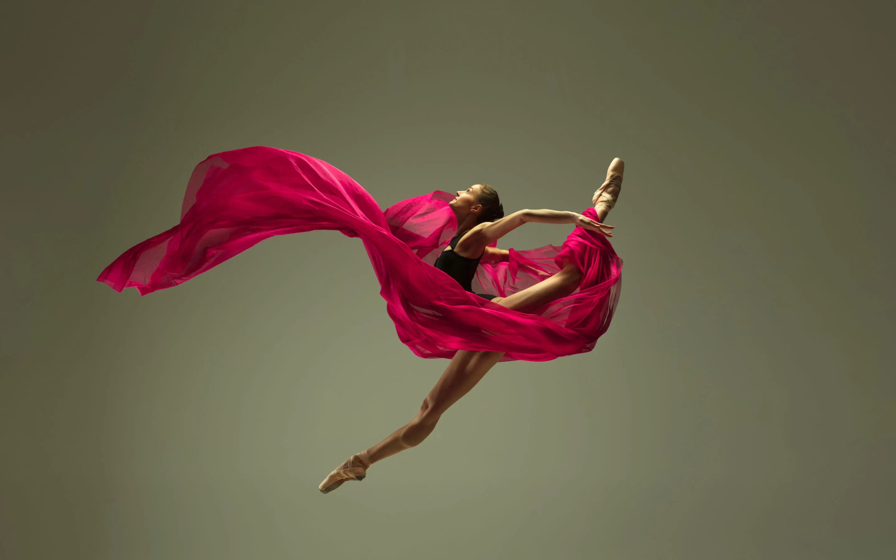

Dance, the movement of the body in a rhythmic way, usually to music and within a given space, for the purpose of expressing an idea or emotion, releasing energy, or simply taking delight in the movement itself. I was 3 years old when I started dancing. I liked it so much I wanted to go everyday of the week.We dance for physical fitness. We dance for mental clarity. We dance for emotional stability, and other such pluses. However, all these benefits could be attained by others means, though I confess I have yet to find a better alternative than a great cha cha to lift both one's heart-rate and spirits.
Hip-hop is a genre of music most often characterized by a strong, rhythmic beat and a rapping vocal track. an artistic dance form based on an elaborate formal technique, characterized by gestures and movements of grace, precision, and fluidity.Contemporary dance is a style of expressive dance that combines elements of several dance genres including modern, jazz, lyrical and classical ballet. Contemporary dancers strive to connect the mind and the body through fluid dance movements